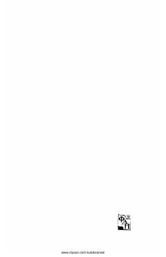

MAOybekning mukammal asarlar to'plamidan Yevropa adabiyoti tarjimalari jamlangan o'n beshinchi jild.
Ushbu kitob o'zbek adibi Oybekning mukammal asarlar to'plamining o'n beshinchi jildi hisoblanadi. Mazkur jild Yevropa adabiyotidan qilingan tarjimalarni, xususan, Plavtning "Xumcha" asarini o'z ichiga oladi.